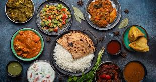
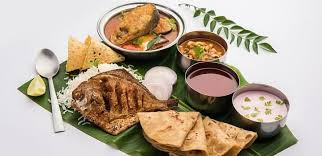

West Bengal

The Famous food of Bengal is maach (fish) and bhaat (rice). Bengalis share an irrevocable relationship with these two foods that are staple in almost every household. The chief food items of the Bengalis are Rice and Fish.
Punjab
Dishes: Chhole, paneer, dal makhani and lassi are the staple food of any Punjabi household. The restaurants here also serve the famous butter chicken and other dishes in both vegetarian and non-vegetarian category with Punjabi flavors.
Maharashtra
In many metropolitan areas, including Mumbai and Pune, fast food is popular. The most-popular forms are bhaji, vada pav, misalpav and pav bhaji. More-traditional dishes are sabudana khichadi, pohe, upma, sheera and panipuri. Most Marathi fast food and snacks are lacto-vegetarian
Madhya Pradesh

The most important crops are rice, wheat, sorghum (jowar), corn (maize), pulses (legumes such as peas, beans, or lentils), and peanuts (groundnuts). Rice is grown principally in the east, where there is more rainfall, while in western Madhya Pradesh wheat and sorghum are more important.
South India

South Indian thali, rice is staple in south India. Idli and sambar, a typical south Indian breakfast dish. Non-vegetarian Andhra-Telangana thali in restaurant. Dosa, a typical south Indian breakfast dish.